|
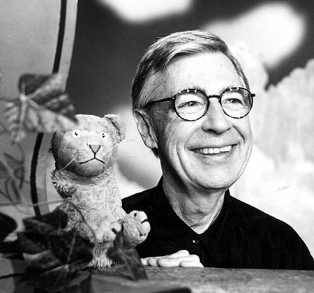 Fred RogersLatrobe, Pennsylvania is responsible for two main exports worthy of note: Rolling Rock bottled beer, and America's best loved television neighbor, Mister Rogers. Frederick McFeely Rogers was born in 1928, a year before the stock market crash brought about the Great Depression. His company, Family Communications, made over one thousand television programs at the studios of WQED in Pittsburgh; each designed to help children understand our often baffling world. He wasn't an actor, but a child development specialist who gave children the confidence to talk about their feelings, express themselves through art, and imagine make-believe worlds. His offscreen lifestyle was identical to that of his television persona: a reassuring adult who was not only happy to sit and talk, but one who managed to live out his entire life without the slightest whisper of scandal -- unless you count one the time he nearly missed a hole while buttoning up his cardigan. He wrote the scripts, the music, the dialog between players, and all the songs in Mister Rogers' Neighborhood. The program started in 1968, and ultimately became longest-running program on PBS. The opening theme, Won't You Be My Neighbor, is meant as a genuine invitation
to the viewer. Each program conforms to a simple pattern, with all of
Mister Rogers' actions encouraging a deeper understanding of the outside world.
The act of arriving onstage in a formal suit and tie, then changing into both
a colorful sweater and beige or navy blue loafers is meant to mirror
what a child witnesses as his parents leave for work in the morning and come
home at night. Each visit begins with an introductory discussion of something
he's brought along with him: art supplies, a kite, sticks of chalk, even a bear
costume. Several times a week, Mister Rogers inserts a reel of 8mm film or a videotape into Picture Picture, a multimedia home entertainment system so-called because the central viewing rectangle is centered inside two gold picture frames. He shows hypnotic, supremely watchable documentary segments where kids get to see how everyday things -- pretzels, pencil erasers, teddy bears, toothbrushes -- are assembled by daunting machinery inside industrial factories, packaged by hand, and shipped to the neighborhood corner stores across America.
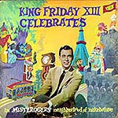Well, Fred thought television was perfectly horrible. He had never seen anything so fumbling or poorly executed. He promptly announced to his family that he wasn't going into the seminary after all, he'd be doing television instead -- he'd seen enough, and now he wanted to dip his hands in it. He went to NBC, where he worked his way up the ladder, delivering coffees. He worked as a floor director on The Gabby Hayes Show, a showcase of Western films. He also maintained sets and stages for The Lucky Strike Hit Parade, The Kate Smith Hour, and NBC Opera Theatre. It was here that he learned that television -- when done correctly -- could be a very intimate medium, and he wondered if the best way to deliver messages to untold thousands of people over live TV might be as simple as pretending there was only one lonely child out there watching the screen. 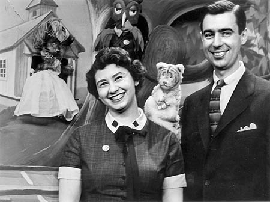In July of 1952, Fred married Joanne Byrd, whom he'd met at Rollins. The next year they moved to Pittsburgh, where Fred decided to help start America's first community-sponsored television station, WQED. There was a lot of paper folding, envelope stuffing, and solicitation for donations -- and at the time, there were only six people trying to get "educational television" on the air. He worked with a perky young actress named Josie Carey, and together they created the station's first regular educational program, The Children's Corner. This was a charming, beautiful program which featured lively, improvised discussions between Josie and a number of Fred's puppet characters -- many of whom would later become regulars in the Neighborhood of Make-Believe. Fred worked behind the scenes, giving each puppet voice characterizations and a personality. The most notable was Daniel Striped Tiger who lived in a clock. He was originally going to be a cuckoo bird, but an error in communication with a prop manager produced a tiger puppet instead. Henrietta Pussycat also came into existence, but she could only say three phrases punctuated by "meows": telephone, beautiful, and Mister Rogers. X the Owl represented Fred's scatterbrained side, while King Friday was official and pompous -- an easily understood metaphor for powerful authoritative systems like government and the police department. 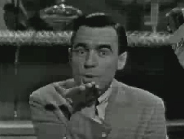"We would talk," Josie remembers. "And we were only supposed to do two or three minutes of material, but some days it would be so interesting we wouldn't stop. And we'd ask each other on the air, me and the puppets, whether or not we were having an intellectual conversation. And we'd agree yes, it was intellectual, and we'd go on with it." It was live TV, and since Fred had to run quickly and quietly behind the scenes (back and forth between puppet stages) before each broadcast he'd take off his shoes and change into sneakers, a habit which stayed with him throughout his television career. The program remained popular with children and adults, and stayed on the air until 1961. The Canadian Broadcasting Corporation (CBC) gave Fred his next opportunity to produce programs for children. When Fred went north, he took many of the puppets from The Children's Corner with him, and began to call their world the Neighborhood of Make-Believe. The studio set pieces as we know them today -- the castle, the tree, Daniel Tiger's clock, the Museum-Go-Round, the schoolhouse, the platypus mound, the Eiffel Tower, the schoolhouse in Some Place Else and the trolley -- were actually constructed for Fred by the Canadian Broadcasting Company. 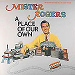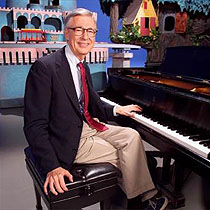The Canadian program was one word: MisteRogers, and for the first time, Fred was in front of the camera. The show was a hit in Canada, but before long Fred had two sons, and he and Joanne moved back to Pittsburgh. Also by this time, after years of part-time study, Fred had become an ordained Presbyterian minister. "What if you were offered an hour of live television every day?" Fred wondered aloud, in several interviews. "Can you imagine what it's like to try to fill that up with something of value? I wanted to give the best I could." In the late 1960s, the U.S. Senate was considering cutting in half an important twenty million dollar grant for so-called "public broadcasting". Fred, not yet famous with adults, was invited to speak and submit a paper at the hearing. He would plead his case -- what makes public television different, why his program differs from cartoons and violence elsewhere on the dial -- and he would do so before the notoriously gruff and impatient Senator John O. Pastore [D] from Rhode Island. Pastore was the first Italian American elected to the United States Senate in 1950. Senator Pastore: All right Rogers, you got the floor. Fred Rogers: Senator Pastore, this is a philosophical statement [motioning to a text copy of the essay he'd submitted] and would take about ten minutes to read, so I'll not do that. One of the first things that a child learns in a healthy family is trust, and I trust what you've said, that you'll read this. It's very important to me, I care deeply about children, my first-- Senator Pastore: [interrupting] Will it make you happy if you read it? 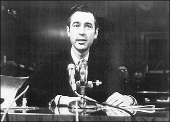Fred Rogers: I'd -- just like to talk about it, if it's all right -- Senator Pastore: [interrupting] Fine. Fred Rogers: This is what I give. I give an expression of care every day to each child, to help him realize that he is unique. I end the program by saying, "you've made this day a special day by just your being you. There's no person in the whole world like you, and I like you just the way you are." I feel that if we in public television can only make it clear that feelings are mentionable and manageable, we will have done a great service. Senator Pastore: [After a long pause] I'm supposed to be a pretty tough guy. This is the first time I've had goose bumps in the last two days. Fred Rogers: Well I'm grateful. Not only for your goose bumps, but for your interest in our kind of communication. 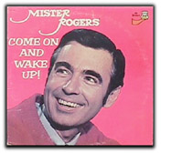Fred spoke for about six minutes total, taking the time to recite lyrics from one of his songs. Fred Rogers: Know that there's something deep inside, that helps us become what we can. For a girl can be someday a lady, and a boy can be someday a man. Senator Pastore: [visibly misty and touched] I think it's wonderful. That is just so wonderful. Looks like you just won the twenty million dollars. 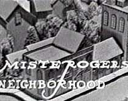Spontaneous applause thundered throughout the courtroom. By that time, National Educational Television (the precursor to PBS) had already started broadcasting Fred's programs nationwide in black and white. MisteRogers made its debut on February 19, 1968. Eventually the show would be in color, Mister Rogers would be split into two words, and the set and furniture would be updated -- but only by small degrees to prevent emotionally sensitive children from becoming confused. Senator Pastore died in 1994. One year later, his Senatorial position would be assumed by another Italian American, the homophobic Rick Santorum [R], also from Pennsylvania. Michael "Batman-Beetlejuice-Mr. Mom" Keaton, a native Pittsburgher, operated both Picture Picture and the electric trolley mechanism when he worked on the studio crew during the 1970s. Sometimes when Fred slid the compartment back to insert a film into Picture Picture, Keaton would intone, "I'm ready to hear your confession, my son." 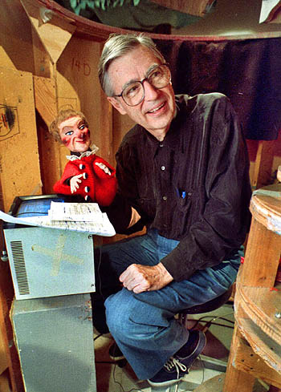It was for this new national series that Fred asked Johnny Costa to be his musical director. This was a surprising choice, since Costa had an extraordinarily nuanced and sophisticated musical style, especially for a children's program. Each day, Costa's musical trio performed all the songs and music live in the studio, as each episode of Mister Rogers' Neighborhood was videotaped. The trolley whistles, Mister McFeely's frenetic Speedy Delivery piano plonks, and the vibraphone flute-toots as Fred sprinkles flakes of fish food into the aquarium were also performed live, as well as Fred's entrance and exit songs. Discerning listeners can easily observe that no rendering of any score across two episodes of Mister Rogers' Neighborhood are even close to identical. Fred considered Johnny one of the most gifted musicians he'd ever met, and one of the most talented jazz pianists in the world. When Costa first started working with Fred, he was a little nervous. Costa wasn't sure how to write jazz for children, but Fred allowed him to do whatever he wanted. Through Costa's enthusiastic and twinkly musical score, one couldn't help but feel the program was a labor of love, constructed by gifted, sensitive individuals intent on child development. Songs performed by Mister Rogers are delivered at a slow pace and address unusual topics, such as the fear of being slurped down the bathtub drain, or a celebration of everyone's body being both fancy and just fine the way it is. Songs which encourage kids to pick up their blocks and put them away (or to pound clay when they're "feeling so mad they could bite.") have earned Mister Rogers the honorary subtitle of the singing psychiatrist. "I must be an emotional archaeologist," Fred says, "because I keep looking for the roots of things. Particularly the roots of behavior and why I feel certain ways about certain things." 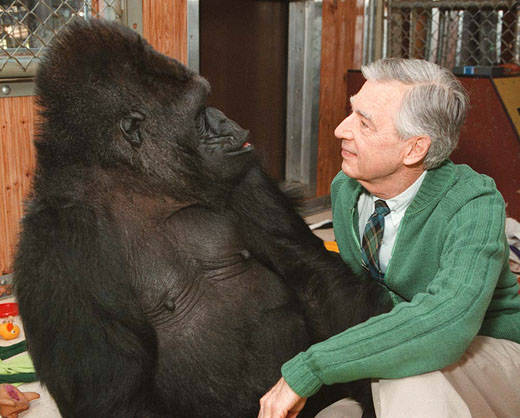On Tuesday, July 28, 1998, more than 300 PBS stations aired an episode of Mister Rogers' Neighborhood featuring Koko, the sign-language using gorilla. This week-long series addressed the confusion and fear young children often experience when confronted with new situations or people who look different from themselves. The week long theme of "inclusion" featured Koko and helpful talks about feeling included, no matter what a child can or can't do. Dispelling the age-old myth of gorillas as frightening monsters, Koko's affinity for Mister Rogers was immediately apparent. His quiet manner soon had Koko so relaxed that she had her arm around him and was intent on removing his sweater and shoes. In 1968, Rogers was appointed Chairman of the Forum on Mass Media and Child Development of the White House Conference on Youth. Besides two George Foster Peabody Awards, Emmys, Lifetime Achievement Awards from the National Academy of Television Arts and Sciences and the TV Critics Association, Fred Rogers received every major award in television for which he is eligible -- and many others from special-interest groups in education, communications, and early childhood. In 1999, he was inducted into the Television Hall of Fame. 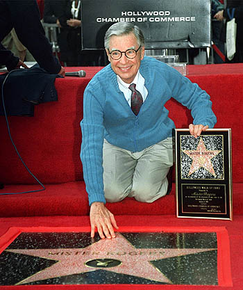Fred Rogers received more than 40 honorary degrees from colleges and universities, including Yale University, Hobart and William Smith, Carnegie Mellon University, Boston University, Saint Vincent College, University of Pittsburgh, North Carolina State University, University of Connecticut, Dartmouth College, Waynesburg College, and his alma mater, Rollins College. In 2002, President George W. Bush presented him with the Presidential Medal of Freedom, the nation's highest civilian honor, recognizing his contribution to the well-being of children and a career in public television that demonstrates the importance of kindness, compassion and learning. Unfortunately, during the ceremony, President Bush kept referring to the program as "Mister Rogers's Neighborhood". Subject matter on Mister Rogers' Neighborhood grew increasingly complex. Topics like adoption and divorce were introduced, as well as death. In one program, Fred shows viewers one of his fishes who's passed on. Special visitors to the "Neighborhood" over the years have included Tony Bennett, Big Bird, cellist Yo-Yo Ma, The Boys Choir of Harlem, children's author Eric Carle, folksinger Ella Jenkins, Julia Child, pianist Van Cliburn, magician David Copperfield, marine biologist Sylvia Earle, Arthur Mitchell and his Dance Theatre of Harlem, actress Rita Moreno, paper sculptor Ben Gonzales, tv stars from "The Incredible Hulk" Bill Bixby and Lou Ferrigno, poet May Sarton, Steeler football wide receiver Lynn Swann, Broadway star Tommy Tune, oboist Natasha, creator and author of the Arthur books Marc Brown, Soviet children's television host Tatiana Vedeneeva, pianist Andre Watts, Olympic gold medalist ice skater Peggy Fleming, the Mississippi Fife and Drum Corp, classical 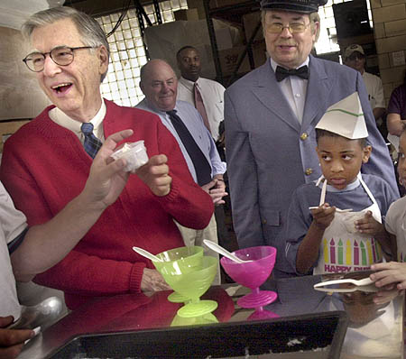guitarist Manuel Barrueco, Apollo XV astronaut Al Worden, potter Eva Kwong, violinist Hilary Hahn, and the performers from the off-Broadway production Stomp. The last episode of Mister Rogers' Neighborhood aired Friday, August 31, 2001. Fred Rogers died shortly after being diagnosed with stomach cancer in 2003. He was buried in a private ceremony attended by sixty relatives, co-workers, and friends, but he told very few people he was sick. David Newell, who played Mister McFeely on the program, served as the family spokesman. After Newell delivered the news, virtually every metropolitan newspaper in the United States started Fred Rogers' obituary on their front pages -- even tabloids which typically favor lurid local stories. The New York Post led its edition with a story of scandal. "Sizzling affair with drug wife sinks narc," the headline ran. Then, a few inches below, the paper began a two-page "special homage" to Mister Rogers. Bette Midler's touring show "Kiss My Brass" offers a tender musical tribute to Mister Rogers. Joining him in a "virtual duet," she sings a rendition of I Like to Be Told -- along with full screen video taken from the program. 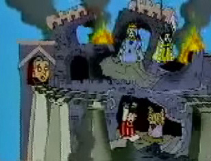Even the FOX animated series Family Guy made an effort to pay tribute to Mister Roger's Neighborhood in the episode "Brian in Love". Baby Stewie emerges from trolley tunnel holding a pop-gun, announcing that Mr. Rogers should "avoid the Neighborhood of Make Believe today, as I dare say you'll find it quite in ruins." 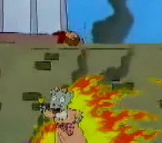Mister Rogers pokes his head through the porthole, and sure enough: the castle has been bombed and burned beyond recognition. King Friday and Queen Sara swing back and forth from home-made hangman's nooses. Daniel Striped Tiger and Prince Tuesday are seen chained in the basement. X the Owl flops lifelessly with two broken wings in his tree branch. Lady Elaine Fairchilde spins lifelessly in circles from the Museum-Go-Round, her head bonking repeatedly against cement blocks -- and Henrietta Pussycat runs dazed through the neighborhood with a jinglebell, roaring with flames and screaming "meow meow meow - skin graft - meow meow meow." The Mister Rogers vs. Stewie gag aired once, but was cut from subsequent airings. The fully restored edit can only be seen in the DVD box set. One of Fred's bright red cardigan sweaters (knitted by his late mother) is enshrined in the Smithsonian's National Museum of American History in Washington, D.C., along with Archie Bunker's easy chair and the set from the M*A*S*H television series. The Smithsonian staff reports that the Mister Rogers sweater is the third most-requested item by tourists.
"...Mister Rogers went onstage to accept the award -- and there, in front of all the soap opera stars and talk show sinceratrons, in front of all the jutting man-tanned jaws and jutting saltwater bosoms, he made his small bow and said into the microphone: All of us have special ones who have loved us into being. Would you just take, along with me, ten seconds to think of the people who have helped you become who you are. Ten seconds of silence. And then he lifted his wrist, looked at the audience, looked at his watch, and said, I'll watch the time. There was, at first, a small whoop from the crowd, a giddy, strangled hiccup of laughter, as people realized that he wasn't kidding, that Mister Rogers was not some convenient eunuch, but rather a man, an authority figure who actually expected them to do what he asked. And so they did. One second, two seconds, three seconds -- and now the jaws clenched, and the bosoms heaved, and the mascara ran, and the tears fell upon the beglittered gathering like rain leaking down a crystal chandelier. And Mister Rogers finally looked up from his watch and said softly, May God be with you to all his vanquished children." |
 Fred
went to Latrobe High School and started college at Dartmouth in New Hampshire,
before transferring in 1951 to Rollins College, a liberal arts institution and
the oldest recognized college in Florida. Here he earned a degree in music composition.
From there, he had planned to go on to the seminary -- but before he
could do so, he got a chance to see something relatively new at his parents'
house, something called a "television".
Fred
went to Latrobe High School and started college at Dartmouth in New Hampshire,
before transferring in 1951 to Rollins College, a liberal arts institution and
the oldest recognized college in Florida. Here he earned a degree in music composition.
From there, he had planned to go on to the seminary -- but before he
could do so, he got a chance to see something relatively new at his parents'
house, something called a "television". There
was a moment at the 1998 Daytime Emmys when Mister Rogers was presented with
a Lifetime Achievement Award. Tom Junod covered the story for Esquire
magazine.
There
was a moment at the 1998 Daytime Emmys when Mister Rogers was presented with
a Lifetime Achievement Award. Tom Junod covered the story for Esquire
magazine.